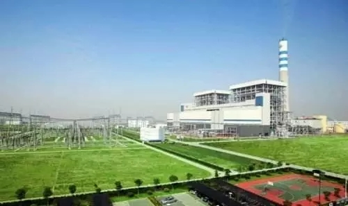

央企成就丨中国能建当好电力能源建设主力军
- 江苏泰州长江北岸，国家煤电节能减排示范电站———国电泰州二期百万千瓦机组工程巍然屹立。8月初，继获评中国电力优质工程之后，又顺利通过国家优质工程金质奖现场复查。该工程由中国能建旗下的中电工程华东院设计，江苏电建一公司、江苏电建三公司承建。刚刚获评“中国绿色能源贡献企业”称号的中国能建，在电力工程设计建设领域，创造了数不清的精品项目，泰州二期就是其中之一。

- 绿色能源源自绿色工程。中国能建持续挑战世界级绿色电力工程设计边界，始终如一为国家奉献高端精品工程，加快推进国际业务优先和新商业模式转变，当好电力能源建设主力军，拓展服务核心主业新版图。
- 发展 在“一带一路”讲述中国故事
- 千里之外的印尼中爪哇省南岸海滨，金色晚霞抹红湛澈长空，芝拉扎二期电站华灯初上。中国能建完成了一、二期电站建设，又承接了三期百万千瓦机组工程。
- 然而，二期投产后，中国能建一改过去的方式，人留下继续服务电站运维，“至今已累计发电超过40亿千瓦时，被评为印尼最佳私营电厂。”年轻的“运行+维护”项目经理汪滨说。这是中国能建为“一带一路”带去的新景象。
- 中国能建为“一带一路”带去了什么呢?
- 提供了中国标准———当地时间7月31日，白俄罗斯330千伏波斯塔维变电站正式投运，为白俄罗斯历史上最大的电网建设项目整体竣工打下坚实基础，电网项目总包方中国能建把中国标准带进了欧洲市场。
- 中国能建牵头完成了“一带一路”能源合作规划研究、“十三五”能源领域国际产能合作规划研究、中国与周边国家电力互联互通规划研究以及10多个国家能源合作规划研究，为推进能源合作提供了决策依据。以承揽的国际项目为载体，推动我国电力标准在项目中的应用，大量国际项目全部或部分采用中国标准，得到了项目业主、咨询工程师的认可，为促进标准“走出去”打下了基础。
- 推广了中国方案———当地时间6月29日，中国能建与英国ReliableEnergySolution公司签订了斯尔桑德垃圾电站与梅顿霍尔垃圾电站项目EPC合同，中国电力解决方案落地欧美市场。
- 针对不同国家的特点和业主需求，中国能建加强金融合作，设计不同的商业模式，推广和应用“中国方案”，借鉴共享，共同发展。巴基斯坦SK水电站项目，撬动了19亿美元的项目投资。约旦油页岩项目，获得了16亿美元的世界上最大的油页岩发电EPC项目。与中非基金合作设立中国海外基础设施开发投资公司，为破解大型项目资金难题创造了条件。
- 奉献了中国建造———当地时间8月4日，中国能建承建的非洲最大水电站———安哥拉卡卡水电站举行开工仪式，项目建设将为当地提供近万个就业岗位，培训一批专业管理和技术人才。
- 此外，中国能建承建的一批具有技术引领性和行业标志性电力工程项目，创造了多个第一。包括阿根廷基塞水电站、越南海阳燃煤电厂项目等。通过这些大项目的实施，向世界展示了“中国建造”的品牌形象。